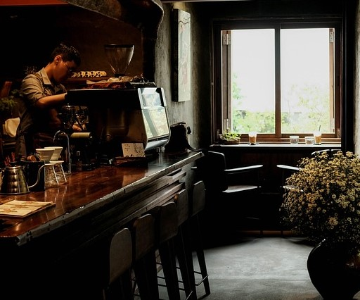
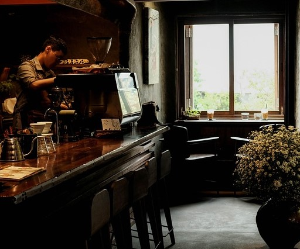

About Eat & Treat
Welcome to Eat & Treat Café – where every bite is a celebration and every visit feels like home!
Nestled in the heart of the city, Eat & Treat Café is your go-to spot for delicious flavors, cozy vibes,
and unforgettable moments. From our freshly brewed coffee to our handcrafted sandwiches, pastas, and
desserts, every item on our menu is made with love and passion.
Our journey began with a simple idea – to create a space where people could eat well, relax, and treat
themselves. Whether you're catching up with friends, working on your laptop, or just taking a break from
your busy day, our café is designed to make you feel warm, welcome, and cared for.
Our menu features a wide variety of café classics and signature delights — from creamy pastas and cheesy
sandwiches to refreshing beverages and decadent desserts. Every dish is prepared fresh using high-quality
ingredients and served with a smile.
Since the day we opened our doors, our mission has been simple — to serve food that brings joy, in an
atmosphere that feels just like home.
 

Vision
At Eat & Treat Café, our vision is to become more than just a place to eat — we aim to be a space where people connect, relax, and create happy memories. We believe in serving happiness through food and hospitality. Our goal is to build a café culture where every guest feels valued, every visit feels special, and every bite reflects quality and care. .
Mission
Our mission is to serve fresh, delicious, and soul-satisfying food in a cozy and welcoming environment. We strive to offer a diverse menu that caters to different tastes, while maintaining quality, hygiene, and affordability. We are committed to creating a space where customers feel at home — whether they’re dropping in for a quick coffee, working quietly in a corner, or sharing laughter with friends.
History
Eat & Treat Café was founded with a simple dream — to create a warm and friendly space where people could enjoy good food and even better company. It all started in [your year, e.g. 2021], with a small team and a big passion for food and hospitality. What began as a local neighborhood café quickly turned into a popular hangout spot known for its cozy interiors, cheerful staff, and signature dishes.